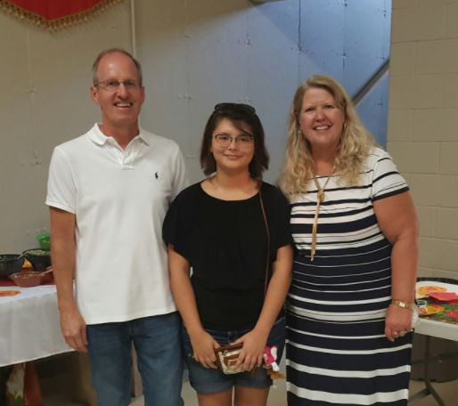

About
Spanish Grammar Online
My name is Sarah Harris, and this my website, Spanish Grammar Online. This site is a place for students to refresh their memory on some topics in Spanish grammar. It is like a digital resource book about the basics.
Spanish grammar is like a puzzle. Some pieces fit together while others do not. You can remove certain endings and add new ones, like different puzzle pieces fitting together. Once you can find the patterns and see some of the formulas, everything can fall into place. I hope this site can help you in your language journey to put all the pieces together.
I remember taking Spanish in high school and I was always excited to learn more. This site can help students who would like to get a preview on lessons not taught yet. It can also help students review and prepare for tests, papers, or presentations. On the flip side, I saw many of my classmates struggle in understanding materials. I hope that this site can help those that need an extra guidance. Sometimes hearing the information in a different manner can help you understand it better.
I am a former student of Martinsville High School, and I have made this site especially for current Martinsville students. The language department of Martinsville is amazing, and this site is supposed to be a way of giving back for all of the wonderful things that Martinsville's language department has done for us students.
